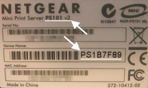

Printserver
Der Begriff "Printserver" ist mehrdeutig. Dies können zum einen Drucker mit integrierter Netzwerkkarte sein (meist Laserdrucker), zum anderen externe Geräte, die Drucker mit Parallel- oder USB-Anschluß im Netzwerk (LAN) verfügbar machen. Es gibt auch Router, die einen integrierten Printserver zum Anschluss eines Druckers bereitstellen.
Verbunden wird ein Drucker mit einer (WLAN-)Netzwerkkarte oder ein externer Printserver grundsätzlich mit einem Router oder einem Switch – eine direkte Verbindung mit dem Rechner ist zwar möglich, erfordert aber entsprechendes Netzwerkwissen und führt die Funktionsweise ad absurdum.
Einen Sonderfall stellen manche Multifunktionsgeräte dar, die zusätzlich einen Scanner im Netzwerk zur Verfügung stellen können. Die Scanner-Komponente wird dann mittels SANE angesteuert und ist nicht Inhalt dieses Artikels.
Traditionell – aber nicht immer – werden Netzwerkdrucker und Printserver mit dem LPD-Protokoll via CUPS verbunden. Neuere Printserver beherrschen auch IPP. Dazu startet man entweder die Druckerverwaltung über den (GNOME-)Menüeintrag "System -> Systemverwaltung/Administration -> Drucker" oder ruft die Verwaltung von CUPS in einem Browser direkt mit http://localhost:631 auf.
Dann kann man einen Assistenten zum Einrichten eines neuen Druckers starten:
als Druckertyp "Netzwerkdrucker" und "LPD/LPR Host or Printer" auswählen
als Adresse die IP-Adresse des Geräts angeben. Empfehlenswert ist es, dem Drucker bzw. Printserver vorher eine feste IP-Adresse zuzuordnen und die automatische Netzwerk-Konfiguration via DHCP abzuschalten (damit der Drucker später immer unter der gleichen IP erreichbar ist).
als Druckerwarteschlange ("Queue") sind meist Bezeichnungen wie
lp,lpt1oderL1anzugeben. Der Name variiert, sollte aber in der Dokumentation stehen. Viele Printserver haben auch eine Web-Oberfläche, die weiterhelfen kann.entweder einen vorhandenen Treiber oder einen geeigneten herunterladen (meist als PPD) und auswählen
Hinweis:
Erscheint die Fehlermeldung /usr/lib/cups/backend/lpd failed bei CUPS, sollte die Warteschlange geändert oder "AppSocket/HP JetDirect" anstelle von "LPD" ausprobiert werden. Näheres dazu im folgenden Abschnitt.
Netzwerkdrucker¶
Drucker mit eigener Netzwerkkarte können mit CUPS angesteuert werden. Meist sind diese Geräte auch Postscript-fähig. Diese Drucker werden so mit CUPS verbunden:
Neuer Drucker -> Netzwerk-Drucker
als Anschluß
AppSocket/HP JetDirectauswählenals Adresse
IP-ADRESSEauswählenfalls kein Treiber vorhanden ist: bei Farbdruckern oder Farb-Multifunktionsgeräten "Postscript -> Generic postscript color printer (en)" auswählen (nicht alle Geräte beherrschen PostScript!)
bei s/w-Geräten kann ein beliebiger PCL(5e)-Treiber ausgewählt werden
Brother¶
Siehe Drucker/Brother.
Gestetner (Ricoh)¶
| PCL6 | PCL5e | Postscript3 | |
| 3532, 4532 | ok | ok | ok |
| 3502, 4502 | ok | ok | ok |
| DSc38, DSc38+ | - | ok | ok |
Kyocera¶
Die neueren Kyocera-Netzwerkdrucker unterstützen das IPP-Protokoll bereits direkt. Dadurch ist die Verwendung sehr unproblematisch. Für die vollständige Unterstützung aller Drucker-Funktionen wird lediglich noch eine passende Postscript-Drucker-Beschreibung in Form einer PPD-Datei benötigt.
Treiber für Kyocera-Drucker erhält man über das Download Center

nach Auswahl der Option "Produkt Funktion - Drucken" und des passenden Drucker-Modells erhält man eine Liste der verfügbaren Drucker-Treiber für verschiedene Plattformen
mit der Angabe von "Linux" als Suchbegriff auf der gleichen Seite erhält man eine Liste mit verschiedenen PPDs für Linux
die Archivdatei herunterladen und entpacken
Die Druckerverwaltung über den Menüeintrag "System -> Systemverwaltung/Administration -> Drucker" (GNOME) bzw. "Systemeinstellungen -> Drucker" (KDE) starten .
Den Assistenten zum Einrichten eines Druckers durch einen Doppelklick auf den Eintrag "Neuer Drucker" (GNOME) bzw. im Menü "Hinzufügen -> Drucker/Klasse hinzufügen" (KDE) starten.
Als Druckertyp "Netzwerkdrucker" und "CUPS-Drucker (IPP)" auswählen.
Die entsprechende Datei aus dem Archiv nach einem Klick auf den Button Treiber installieren... auswählen.
Die IP-Adresse oder den Hostnamen des Druckers eintragen. Statt
http://als Protokoll ist jeweils auchipp://möglich:z.B. für FS-1020DN, FS-3820N, FS-C5016N:
http://IP-ADRESSE/ipp/lp1z.B. für FS-1018MFP:
http://IP-ADRESSE/printers/lp1
Falls die passende PPD-Datei für den betreffenden Drucker bereits installiert ist, braucht das Modell nur noch aus der Liste ausgewählt zu werden.
Hinweis:
Der Drucker "Kyocera-Mita FS-3820N" ist z.B. in der Liste unter dem Eintrag "Mita FS-3820N" zu finden.
Ältere Printserver von Kyocera, z.B. der "sb-4e", beherrschen nur den LPD-Modus. Die Einrichtung entspricht dann dem in der Einleitung beschriebenen Abschnitt. Die Warteschlange heißt dann lp. Mit den Warteschlangennamen lp1 bis lp8 lassen sich zusätzlich logische Drucker mit abweichenden Einstellungen ansprechen. So lässt sich z.B. ein zweiter, virtueller Drucker einrichten, auf dem immer eine "Confidential"-Bannerseite gedruckt wird.
Die deutsche Herstellerfirma SEH bietet das zugehörige "InterCon NetTool" auch für Linux an. Das RPM-Paket lässt sich mit Alien in ein .deb-Paket umwandeln und anschließend installieren. Alternativ kann die RPM-Datei mit einem Archivmanager entpackt und die enthaltenen Dateien mit Root-Rechten - unter Beibehaltung ihrer Struktur - nach /usr/local/ kopiert werden. Damit sind bequeme Firmwareupdates und Druckerkonfiguration möglich.
Lexmark¶
OptraC¶
Diesen alten Laserdrucker kann man an modernen Computern, die keine Parallelschnittstelle mehr besitzen, mittels einer zweiten Netzwerkkarte betreiben. Einfacher ist aber die Verwendung eines gebrauchten, externen Printservers mit Parallelschnittstelle, da z.B. in Notebooks keine zweite Netzwerkkarte eingebaut werden kann. Die zweite Netzwerkkarte wird über die Datei /etc/network/interfaces (mit Root-Rechten editieren) manuell statisch konfiguriert.
Hinweis:
Das hier verwendete Beispiel betreibt unter eth0 eine DHCP-Schnittstelle und unter eth1 eine statische Adresse für den Netzwerkdrucker. Von der Verwendung des NetworkManagers, der Netzwerkschnittstellen automatisch verwaltet, ist bei einer solchen Konfiguration abzuraten.
auto lo iface lo inet loopback # The primary network interface auto eth0 iface eth0 inet dhcp # The secondary network interface auto eth1 iface eth1 inet static address 192.168.0.1 netmask 255.255.255.0 gateway 192.168.0.1
In der Konsole wird nun das Netzwerk neu gestartet:
sudo /etc/init.d/networking restart
Unter "System -> Systemverwaltung -> Netzwerk" kann man die "Kabelverbindung" für eth1 überprüfen:
Configuration:
static IP adressIP adress:
192.168.0.1Subnet mask:
255.255.255.0Gateway adress:
192.168.0.1
Der Drucker bekommt über sein Display-Menü ("Menüs - Menü Netzwerk 1 - Protokoll IP") folgende Einträge:
IP-Adresse setzen:
192.168.0.10IP-Netzmaske setzen:
255.255.255.0IP-Gateway setzen:
192.168.0.1
Das Abspeichern der Einträge nicht vergessen. Weitere Einträge erfolgen über ein Terminal:
sudo route add -net 192.168.0.0 netmask 255.255.255.240 gw 192.168.0.1 eth1
In einem Browser verbindet man sich nun mit CUPS über die Adresse http://localhost:631 und fügt einen neuen Drucker hinzu:
Der Name wird später als Druckername wieder auftauchen, er kann frei gewählt werden:
Name
Ort (optional)
Beschreibung (optional)
Anschluss:
LPD/LPR Host or Printersocket://192.168.0.10:9100in das Feld eintragenMarke:
LexmarkModell:
Lexmark Optra C710 Foomatic/Postscript (recommended) (en)(auch bei C720)
Externe Printserver¶
CNet CNP 410¶
Das Einrichten eines Druckerservers CNP410 gestaltet sich relativ einfach:
dem Druckerserver eine statische IP-Adresse im lokalen Netz zuweisen (d.h. DHCP ausschalten). Dies kann über das integrierte Web-Interface erledigt werden, für das man einfach die aktuelle IP-Adresse des Printservers in einem Browser eingeben muss. Für den gleichen Zweck existiert auch ein entsprechendes Windows-Programm.
unter GNOME: "System -> Systemverwaltung/Administration -> Drucker auswählen" und den Assistent für einen neuer Drucker starten
Im ersten Dialog Einstellen:
"Netzwerkdrucker"
"CUPS Printer(IPP)"
URI:
http://IP-ADRESSE/lp1
Im nächsten Dialog den Drucker, der am Printserver hängt, auswählen und mit "OK" abschließen.
Linksys¶
Linksys PSUS4¶
Das Einrichten des Linksys PSUS4 gestaltet sich relativ einfach:
dem Druckerserver eine statische IP-Adresse zuweisen, d.h. DHCP ausschalten, sofern kein DHCP-Server vorhanden ist. Dies kann relativ einfach über das Web-Interface des Printservers erledigt werden.
"System -> Systemverwaltung/Administration -> Drucker" auswählen & "Neuer Drucker"-Assistent starten
im ersten Dialog einstellen: "Netzwerkdrucker -> Unix Printer(LPD)"
URI:
lpd://IP-ADRESSE/printers/p1und auf "Weiter"
Linksys WPSM54G¶
Das Einrichten des Linksys WPSM54G mit WLAN für Multifunktionsgeräte gestaltet sich relativ einfach:
Printserver per Netzwerkkabel an das Netzwerk anschließen
einen Browser öffnen und die IP-Adresse des Printservers als Adresse eingeben (am besten in den Routereinstellungen nachschauen, welche IP der Printserver bekommen hat!)
als nächstes wird der Benutzername und das Passwort abgefragt (Benutzer und Passwort:
admin)im Menü unter "Wireless" WLAN-Zugangsdaten eingeben
je nach dem, wie das Netzwerk aufgebaut ist, muss man evtl. noch einige Einstellungen im Router oder im Menü des Printservers ändern
jetzt das Netzkabel vom Printserver und den Netzstecker trennen
den Drucker per USB, das Netzwerkkabel und zuletzt den Netzstecker anschließen. Nun sollte der Printserver über WLAN erreichbar sein.
unter GNOME: "System -> Systemverwaltung/Administration -> Drucker auswählen" und den Assistent für einen neuer Drucker starten
oder unter Cups localhost:631 Neuen Drucker hinzufügen
Netzwerkdrucker auswählen und als Adresse eingeben:
lpd://<IP-Adresse>/binary_p1
LogiLink PS0005B¶
Die Konfiguration erfolgt über die Weboberfläche des Geräts. Die Standard-IP 192.168.2.2 sollte in eine feste IP aus dem Adressbereich des Routers geändert werden.
Einbindung in Ubuntu:
CUPS starten:
localhost:631"Neuen Drucker hinzufügen", Anschluss
AppSocket/HP JetDirectDer Drucker hat nun die Adresse
socket://IP-ADRESSE/IP:9100Die weitere Konfiguration von CUPS dem Druckermodell entsprechend durchführen
Longshine LCS-PS112 Printer-Server und HP LaserJet 1100¶
Ein an den Parallel-Port angeschlossener HP LaserJet 1100 wird am einfachsten über lpd://IP-Adresse/lp1 angesprochen.
Die Namensvergabe der Druckerports in der Administration des PrintServers ("Setup -> more -> SMB") für das SAMBA-Protokoll eignet sich nur für Windows-Rechner.
Drucker an den PrintServer anschließen
unter Ubuntu: "System -> Systemverwaltung -> Drucken -> Neu -> Netzwerk-Drucker -> LPD/LPR-Host" oder -Drucker
Host: IP des PrinterServers (z.B.
192.168.1.10)Warteschlange:
lp1Drucker aus Datenbank auswählen
Hersteller: HP
Modelle: LaserJet 1100
Treiber: HP LaserJet 1100 hpijs
Wobei der hpijs-Treiber verhältnismäßig langsam ist. Bessere Erfahrungen wurden bislang mit dem CUPS+Gutenprint-Treiber gemacht.
Netgear Mini Print Server PS101¶
Vom PS101 existieren zwei Versionen: PS101 v1 und PS101 v2. Netgear schreibt auf seiner Webseite, dass nur der v2 von Linux unterstützt wird. Unbestätigten Quellen zu Folge funktioniert aber auch der v1 unter Linux. Diese Anleitung bezieht sich auf den v2. Möglicherweise funktioniert diese Anleitung aber auch unter v1 oder ähnlichen Printservern von Netgear.
Bei einigen Quellen im Netz findet man eine Beschreibung, dass der PS101 sich "ohne Probleme, out of the Box" einbinden lässt - und zwar als Remote LPR Drucker. Leider ist nicht bei allen Geräten im Auslieferungszustand die Konfiguration vollständig, so dass diese noch nachträglich ergänzt werden muss, so dass der Printserver unter Linux funktionieren mag.
Welchen Printserver habe ich?¶
 Wenn man sich die Rückseite des Printservers anschaut, so findet man dort einen Aufkleber, auf dem wichtige Informationen aufgedruckt sind. An oberster Stelle steht die genaue Typenbezeichnung. Diese sollte lauten "Mini Print Server PS101 v2". Siehe auch das Bild rechts.
Device-Namen und IP-Adresse bestimmen¶
Um die Konfiguration zu ergänzen muss man den Namen oder die IP-Adresse des Printservers kennen. Im Auslieferungszustand bezieht der Server seine IP-Adresse per DHCP von einem DHCP-Server. Je nach verwendetem DHCP-Server (bspw. bei einer AVM FRITZ!Box) kann man diese Einstellung belassen. Im Fall der Fritz!Box ist es so, dass der Server von der Fritz!Box bei jedem Start die selbe IP-Adresse zugeordnet bekommt. Ebenso vorteilhaft: Der Printserver meldet sich beim internen DNS Server der Fritz!Box an und er kann mit seinem Namen angesprochen werden.
Der Default-Name des Printservers ist ebenfalls auf der Rückseite des Gerätes auf dem silbernen Aufkleber im Abschnitt "Device Name" aufgedruckt. Er hat die Form "PSxxxxxx", wobei xxxxxx eine sechsstellige hexadezimale Zahl ist. Beispielsweise "PS1B7F89", wie auf dem Bild rechts. Netzwerkkenner werden feststellen, dass diese Zahl die letzten drei Bytes der Mac-Adresse sind (hier also 1B:7F:89). Die ersten drei Byte der MAC-Adresse (hier 00:C0:02) kennzeichnen Netgear als Gerätehersteller.
Den Namen kann man allerdings über das Webinterface des Servers im Abschnitt Print Server Settings / Configure ändern. Hier sollte man vorübergehend auch das Passwort löschen (leeres Passwort), damit man später die Konfiguration per FTP (sic!) ändern kann.
Notfalls muss man in die Konfiguration des DHCP-Servers schauen, bei der FRITZ!Box via http://fritz.box/ beispielsweise unter "Netzwerkgeräte", wo alle am Netz angeschlossenen Geräte aufgelistet sind. Den Printserver findet man entweder über seinen Namen oder aber auch anhand der MAC-Adresse, die ebenfalls auf der Rückseite des Printservers in der untersten Box aufgedruckt ist.
Konfiguration überprüfen¶
Unter Windows hat man ein Tool, welches einem den Namen der internen Printerqueue anzeigt. Entweder ist dies L1 oder P1 im Auslieferungszustand. Leider kann man dies unter Linux nicht direkt überprüfen - auch nicht mit Hilfe des Web-Interfaces. Allerdings hat der PS101 ein paar Überraschungen eingebaut, die einen dabei aus der Patsche helfen: einen Telnet- und einen FTP-Server.
Zunächst muss man sich per Telnet auf dem Printserver anmelden (im Beispiel heißt der Server PS1B7F89, dies muss natürlich durch den richtigen Namen oder die IP-Adresse des Servers ersetzt werden). Dazu öffnet man ein Terminal und gibt folgendes ein:
telnet PS1B7F89
Als Antwort erhält man:
Trying 192.168.178.21... Connected to PS1B7F89. Escape character is '^]'. Welcome to Print Server PS>
Am Prompt PS> kann man nun unterschiedliche Kommandos absetzen, bspw. help, um eine Liste der verfügbaren Kommandos zu erhalten. Dort wird dann der Befehl Monitor angezeigt, der einem den Printerstatus anzeigen kann:
PS>monitor (P1)STATE: Idle TYPE: Parallel PRINTER STATUS: On-Line
In der ersten Zeile steht der Name der Printerqueue - hier P1. Diese notieren! Der Status wird nun zyklisch wiederholt. Mit der Tastenkombination
Strg +
C bricht man die Schleife ab. Mit dem Kommando exit beendet man die Telnet Session. Die Konsole nicht schließen, die wird noch gebraucht.
Konfiguration ergänzen¶
Damit der Drucker nun als LPR-Queue angesprochen werden kann, muss die interne Konfigurationsdatei des Printservers ergänzt werden. Dazu verbindet man sich per FTP auf den Printserver. An einer Konsole gibt man Folgendes ein:
ftp PS1B7F89
Der Printserver meldet sich mit:
Connected to PS1B7F89. 220 Print Server Ready. Name (server:user)
Als Benutzername zur Anmeldung wird der aktuelle vorgeschlagen. Diesen darf man nicht verwenden! Man muss den Namen des Printservers angeben - hier also PS1B7F89. Als Passwort wird das Passwort aus dem Webinterface verlangt. Da anscheinend die Firmware Probleme mit der Übertragung des Passworts aus dem Webinterface hat, sollte für die Zeit der Konfiguration das Passwort leer sein. So kann man sich mit einem einfachen
⏎ anmelden.
Mit ls kann man sich eine Liste aller verfügbaren "Dateien" anzeigen lassen. Praktisch lassen sich durch das Abrufen dieser Pseudo-Dateien auch gewisse Funktionen des Printservers auslösen.
Mit get config wird die Konfiguration des Printservers auf den lokalen PC als Textdatei mit dem Namen config in das aktuelle Verzeichnis (meist also $HOME) übertragen. Mit einem beliebigen Text Editor kann man diese nun anschauen und verändern:
0001 BOX_NAME:PS1B7F89 0002 MAC_ADDR:00C0021B7F89 0012 TCPIP_P :Enable 0014 NETB_P:Enable 0100 L1_PROUT:P1 0101 L1_PREST: 0102 L1_POSTR: 0103 L1_CHGLF:No 0120 L2_PROUT: 0121 L2_PREST: 0122 L2_POSTR: 0123 L2_CHGLF:No 0140 L3_PROUT: 0141 L3_PREST: 0142 L3_POSTR: 0143 L3_CHGLF:No 0501 LPT1MODE:Ack&Busy 4000 IP_ADDR:192.168.178.21 4001 GATEWAY:192.168.178.1 4002 MASK :255.255.255.0 4010 TCP_INT:0 4011 TCP_CNT:0 4012 WINS_IP:0.0.0.0 4020 DHCP_MODE:Enable 5000 SMBGNAME:GROUPIE 5001 SMBDROP:No 5002 SMBDELAY:0
Die Konfigurationsdatei hat den Aufbau Zeilennummer Key:Wert Die Zeilennummern sowie die Namen der Keys dürfen nicht verändert werden. Für die Konfiguration ist die Zeile 0100 L1_PROUT: wichtig. Diese kann keinen Wert haben. In diesem Fall muss hier der Name der Printerqueue ergänzt werden. Und zwar ohne Leerzeichen nach dem Doppelpunkt, so wie in dem Beispiel angegeben. Der Name der Printerqueue ist ja bereits über die Telnet-Session in Erfahrung gebracht worden. In der Regel also P1 oder L1. Anschließend die Datei wieder speichern und den Editor beenden.
Die FTP-Session sollte noch laufen. Also im entsprechenden Terminal den Befehl put config eingeben, so dass die geänderte Konfiguration an den Printserver übertragen wird. Anschließend ruft man den Befehl get reset auf, damit die Konfiguration neu eingelesen wird. Allerdings muss man nun den Printserver stromlos machen und wieder anschließen, damit die Werte auch tatsächlich übernommen werden.
Nun ist die Konfiguration ergänzt und der Printserver kann über "System -> Systemverwaltung -> Drucken" eingerichtet werden:
neuer lokaler Drucker
Typ:
LPD/LPR Host or Printerder Name des Printservers (Host) - in diesem Fall
PS1B7F8als Warteschlange trägt man den Namen der Druckerwarteschlange (Queue) ein - hier also beispielsweise
P1
Im nächsten Schritt wählt man den Hersteller und das Modell des Druckers aus, an dem der Printserver hängt.
Router als Printserver¶
Vorab sollte man über die Weboberfläche des Routers kontrollieren, ob evtl. spezielle Einstellungen zur Bereitstellung des Druckers für das Netzwerk vorgenommen werden müssen.
AVM FRITZ!Box¶
Das Einrichten eines Druckers, angeschlossen am USB-Anschluss der FRITZ!Box , ist spielend einfach. Mit Verweis auf die Original-Anleitung richtet man den Drucker als "AppSocket/HP JetDirect"-Verbindung ein und gibt entweder die IP-Adresse des Routers oder den DNS-Namen, also fritz.box und den Port 9100 ein. Im allgemeinen entspricht das der Adresse socket://192.168.178.1:9100, sofern die IP-Adresse der Fritz-Box nicht verändert wurde. Der "USB-Fernanschluss" darf nicht aktiviert sein. Dieser funktioniert nur mit entsprechender Windows-Software von AVM.
Alternativ kann der Drucker z.B. über den folgenden Befehl eingerichtet werden (statt der IP kann auch fritz.box angegeben werden):
sudo lpadmin -p MeinDrucker -E -v socket://192.168.178.1:9100 -m /PFAD/MeinDrucker.ppd
Der Pfad lautet häufig /usr/share/ppd.
Hinweis:
Wenn die FRITZ!Box als WDS-Repeater eingerichtet ist (nicht bei allen FRITZ!Box-Modellen möglich), muss anstelle von fritz.box die IP-Adresse eingetragen werden, unter der die FRITZ!Box im Netzwerk erreichbar ist. Diese IP-Adresse wurde bei der Einrichtung in der Benutzeroberfläche der FRITZ!Box festgelegt.
Siemens SX541¶
Am Client startet man wie gewohnt die Druckerkonfiguration und richtet einen neuen Netzwerkdrucker mit "LPD/LPR Host or Printer" ein. Als Host muß die IP-Adresse des Routers angegeben werden, die Warteschlange ist lpt1. Anschließend erfolgt die Auswahl des Druckerherstellers und Modells.
Speedport W920V¶
Das Einrichten des Druckers geschieht auf folgendem Weg:
"System -> Systemverwaltung -> Drucker"
Neu
Gerät: sonstiges
Geräte URL:
socket://<IP-Adresse>:9100Drucker aus Datenbank auswählen
Weiter und Anwenden
Zyxel P-335¶
CUPS öffnen:
http://localhost:631/Verwaltung wählen, Drucker hinzufügen
Andere Netzwerkdrucker: LPD/LPR-Host oder -Drucker (Unknown)
Verbindung:
lpd://IP-Adresse/LP1(die IP des Routers mit der korrekten Warteschlange)Einen Namen, Beschreibung und Ort wählen
Marke und Typ des Druckers wählen oder am besten die entsprechende PPD Datei auswählen
Drucker hinzufügen
Standardeinstellungen festlegen
Das Ganze kann natürlich auch über "System -> Systemverwaltung -> Drucken" gemacht werden:
Neu
Netzwerkdrucker
LPD/LPR-Host oder -Drucker
Host, z.B.:
192.168.1.1Warteschlange:
LP1Drucker aus Datenbank oder PPD-Datei bereitstellen
Name, Beschreibung und Ort (optional)
Anwenden
T-Sinus 154 DSL¶
Die Einrichtung eines USB-Druckers an einem T-Sinus 154 DSL-Router geschieht identisch wie beim Zyxel P-335. In der Regel ist bei diesen Routern die IP-Adresse 192.168.2.1 voreingestellt.
Vodafone EasyBox¶
Das Vorgehen ist ähnlich dem des Zyxel P-335:
CUPS öffnen:
http://localhost:631/Verwaltung wählen, Drucker hinzufügen
Andere Netzwerkdrucker: LPD/LPR-Host oder -Drucker (Unknown)
Verbindung:
lpd://<IP-Adresse>/<Warteschlange>(die IP des Routers, i.d.R.192.168.2.1, mit der korrekten Warteschlange, einzustellen im Menü der EasyBox unter Extras | USB | Drucker-Server)Einen Namen, Beschreibung und Ort wählen
Marke und Typ des Druckers wählen oder am besten die entsprechende PPD-Datei auswählen
Drucker hinzufügen
Standardeinstellungen festlegen
- Erstellt mit Inyoka
-
 2004 – 2017 ubuntuusers.de • Einige Rechte vorbehalten
2004 – 2017 ubuntuusers.de • Einige Rechte vorbehalten
Lizenz • Kontakt • Datenschutz • Impressum • Serverstatus -
Serverhousing gespendet von